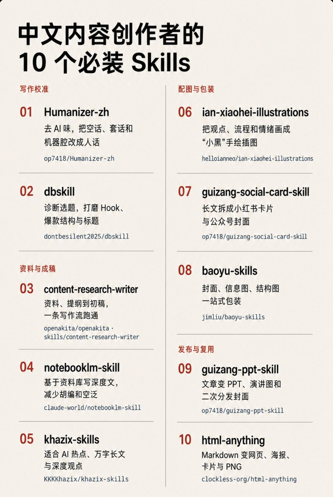

X｜老白：中文內容創作者必裝的 10 個 Agent Skills 工具清單
來源是老白（@laobaishare）在 X 發布的長貼文，主題是「中文內容創作者，必裝的 10 個 skill」。這份清單很適合收進 AI 學習雷達，因為它把中文內容生產流程拆成四段：寫作校準、資料與成稿、配圖與包裝、發布與復用。

一句話摘要
這則貼文是一張中文創作者的「Agent Skills 工具棧地圖」：前段用 Humanizer-zh / dbskill 修語氣與選題，中段用 content-research-writer / notebooklm-skill / khazix-skills 做資料與長文，後段用 ian-xiaohei-illustrations、guizang-social-card-skill、baoyu-skills、guizang-ppt-skill、html-anything 把內容包裝成插圖、卡片、簡報與 HTML 頁面。
原文重點
X 貼文列出 10 個工具：
- Humanizer-zh：中文「去 AI 味」工具，針對空話、套話、三段式與過度排比等機器腔。
- dbskill：內容選題診斷器，用於商業表達、hook、爆款拆解與小紅書標題。
- content-research-writer：從選題、找資料、列提綱到初稿的一條寫作流。
- notebooklm-skill：讓 NotebookLM 先查資料、Claude 再動筆，適合深度文與行研。
- khazix-skills：卡茲克開源的寫作合集，偏 AI 熱點分析、萬字長文、深度觀點。
- ian-xiaohei-illustrations：把觀點、流程與情緒畫成「小黑」手繪正文配圖。
- guizang-social-card-skill：把長文拆成小紅書圖文與公眾號封面。
- baoyu-skills：寶玉的視覺工具箱，包含封面、資訊圖、結構圖與圖解。
- guizang-ppt-skill：把文章觀點轉成 PPT、演講圖、頭圖與二次分發封面。
- html-anything：把 Markdown / 文案轉成 HTML 頁面、海報、卡片與 PNG。
圖片 OCR
長圖標題為「中文内容创作者的 10 个必装 Skills」。版面分左右兩欄，米白背景、紅色編號、黑色粗體工具名，並分成四個區塊：
- 寫作校準：Humanizer-zh、dbskill
- 資料與成稿：content-research-writer、notebooklm-skill、khazix-skills
- 配圖與包裝：ian-xiaohei-illustrations、guizang-social-card-skill、baoyu-skills
- 發布與復用：guizang-ppt-skill、html-anything
GitHub / 來源查核
已用 GitHub API 逐一查核 10 個 repo 的存在、描述、授權、語言與星數快照：
- `op7418/Humanizer-zh`：Humanizer 的汉化版本，Claude Code Skills，旨在消除文本中 AI 生成的痕迹。（⭐ 13,823 / fork 963，license: MIT，語言: N/A）
- `dontbesilent2025/dbskill`：dontbesilent 的商业诊断 Skills（⭐ 8,793 / fork 1,033，license: NOASSERTION，語言: JavaScript）
- `openakita/openakita`：An open-source AI assistant framework with skills and agent architecture（⭐ 1,868 / fork 262，license: AGPL-3.0，語言: Python）
- `claude-world/notebooklm-skill`：NotebookLM does the research, Claude writes the content. Research → Synthesis → Content Creation → Publishing. Claude Code Skill + MCP Server.（⭐ 373 / fork 51，license: MIT，語言: Python）
- `KKKKhazix/khazix-skills`：数字生命卡兹克开源的 AI Skills 合集 | Agent Skills: neat-freak 洁癖 (docs/memory closeout), hv-analysis, khazix-writer & more — Claude Code, Codex & 40+ agents（⭐ 17,850 / fork 2,016，license: MIT，語言: Python）
- `helloianneo/ian-xiaohei-illustrations`：中文小黑怪诞正文配图生成 Skill | 16:9 白底手绘 | 少量红橙蓝批注 | Codex Skill（⭐ 8,475 / fork 1,028，license: MIT，語言: N/A）
- `op7418/guizang-social-card-skill`：🪧 Claude Code / Codex skill — generate Xiaohongshu carousels & WeChat 21:9+1:1 cover pairs. Editorial × Swiss visual systems, 28 layouts, 10 themes, single-file HTML → PNG. 小红书图文 + 公众号封面对（⭐ 5,499 / fork 457，license: AGPL-3.0，語言: HTML）
- `JimLiu/baoyu-skills`：未提供描述（⭐ 24,110 / fork 2,690，license: MIT，語言: TypeScript）
- `op7418/guizang-ppt-skill`：AI-agent Skill for generating polished HTML slide decks: editorial magazine and Swiss layouts, image prompts, social covers, and a WebGL/low-power presentation runtime.（⭐ 22,281 / fork 1,624，license: AGPL-3.0，語言: HTML）
- `clockless-org/html-anything`：Turn any file into a beautiful, interactive, shareable HTML — WhatsApp logs, PDFs, transcripts, code, anything.（⭐ 88 / fork 4，license: MIT-0，語言: JavaScript）
對 AI 學習雷達的意義
這則不是單一工具新聞，而是一張「中文內容工作流」拼圖：
- 寫前：dbskill 幫忙判斷題目是否值得寫、hook 是否清楚。
- 寫中：NotebookLM / content-research-writer / khazix-skills 把資料、提綱、深度長文串起來。
- 寫後：Humanizer-zh 做中文語氣校準，避免 AI 腔、空泛句與模板化段落。
- 發布：social-card、baoyu-skills、PPT skill、html-anything 把同一份內容轉成圖文、封面、簡報與網頁。
這和欒帥的 AI 課程與知識庫工作流高度相關：未來可以把它整理成「一篇內容如何一魚多吃」的課堂示範，從資料庫查證、文章成稿、去 AI 味、卡片化、PPT 化到 HTML 發布。
實務提醒
- 這些 repo 的定位不同：有些是單一 skill，有些是多 skill collection，有些是完整 agent framework；安裝前要看 README，不宜一次全裝到同一個 agent context。
- 授權差異很大：MIT / MIT-0 相對寬鬆；AGPL-3.0 可能影響服務端或衍生作品；dbskill 顯示為 non-commercial / other 類型，商用前需特別檢查 LICENSE。
- GitHub 星數只是社群熱度快照，不等於穩定性、維護品質或適合生產使用。
- 內容「去 AI 味」不應變成規避揭露或偽裝作者身份；更好的用法是提升可讀性、具體性與個人觀點。
- 圖片、PPT、卡片化工具涉及品牌風格與素材授權，對外發布前仍需人工審稿。
可轉成課堂練習的方式
- 給學生一份長文草稿與資料來源。
- 用 NotebookLM / research writer 做資料摘要與提綱。
- 用 Humanizer-zh 做語氣校準，要求保留事實與引用。
- 用 social-card / baoyu / PPT skill 轉成三種輸出：小紅書卡片、課堂投影片、HTML 摘要頁。
- 最後讓學生比較：同一內容在長文、卡片、簡報、網頁中的資訊密度與視覺層級差異。